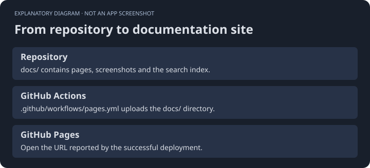
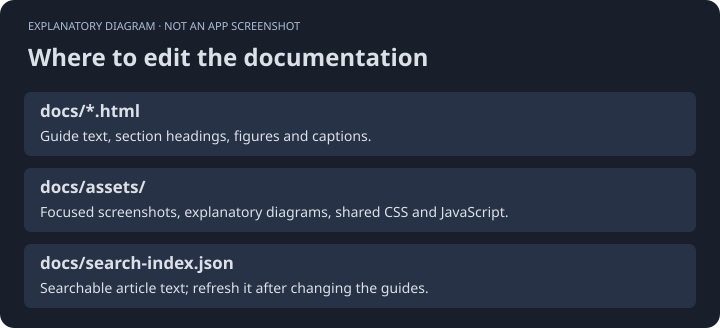
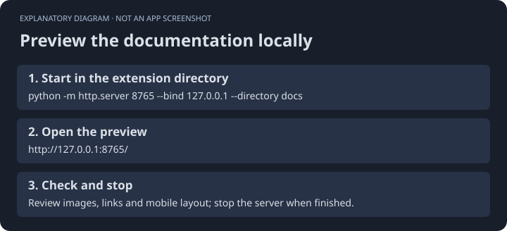

STPHE / GitHub Pages
Publish these docs from the repository.
The documentation is a static site. It needs no package install or external theme service.
Repository setup
- Push the extension repository, including
docs/and.github/workflows/pages.yml, to GitHub. - Open Settings → Pages and select GitHub Actions as the source.
- Push documentation changes to
mainormaster, or manually run the Deploy documentation workflow. - Use the Pages URL shown by the successful deployment.
The workflow uploads only docs/. Project-site paths work because navigation and asset URLs are relative.


Maintain the docs
Edit the HTML pages in docs/ and shared assets in docs/assets/. Update search-index.json when changing article content. Keep screenshots free of private prompts, credentials, and account details.


Preview locally
python -m http.server 8765 --bind 127.0.0.1 --directory docsVisit http://127.0.0.1:8765/. Stop the preview when finished.


Hosting reference
GitHub’s custom Pages workflow documentation explains environment permissions and publication settings.